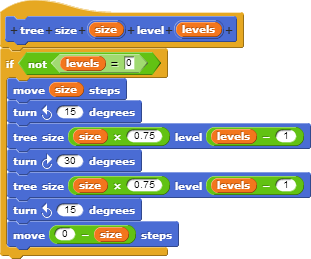

Someone wrote the following code to draw a tree. When they drew the
picture in the center, what number did they put in for the levels
argument? In other words, what goes in the blank in the code on the
right?



Choose one:
0
Not quite. How many different sizes of line segment are in the picture?
1
Not quite. How many different sizes of line segment are in the picture?
4
Not quite. How many different sizes of line segment are in the picture?
5
Nice! There are indeed five different levels present in the tree.
What would happen if you changed the argument size to be -100?
Choose one:
The program will never stop running and a lot of different branches will be drawn.
The program will stop. Try running walking through the function step-by-step using the given arguments.
It will never stop running and only a single branch will be drawn.
The program will stop. Try running walking through the function step-by-step using the given arguments.
Nothing - it will work just like if the same positive value was provided.
Not quite. What happens when we plug in a negative value to the move block?
The image will be flipped upside down but will otherwise look the same.
Nice! Inputting negative values to the move block will make the sprite move backwards.
Nothing will be drawn.
Something will be drawn. Try running walking through the function step-by-step using the given arguments.
What would happen if you changed the argument levels to be -4?
Choose one:
The program will never stop running and a lot of different branches will be drawn.
You're correct that the program will never stop running. Try walking through the code step-by-step to see exactly what happens.
It will never stop running and there will be no forks in the version of the tree that is drawn.
Correct! The function will never hit the levels = 0 case, and will only ever make the first call to itself.
Nothing - it will work just like if the same positive value was provided.
Not quite. Will the repeat until loop's condition ever be true?
The image will be flipped upside down but will otherwise look the same.
Not quite. Will the repeat until loop's condition ever be true?
Nothing will be drawn.
Something will be drawn.